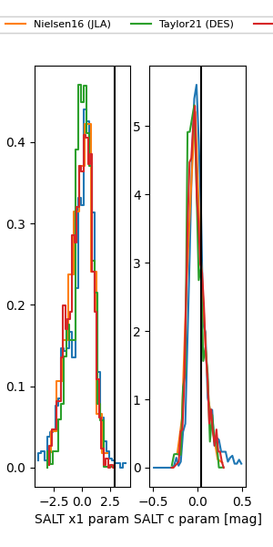

FINK: ZTF25abmysfv
Lasair: ZTF25abmysfv
ALeRCE: ZTF25abmysfv
ZTF25abmysfv (ztf,fink)
equatorial (ra, dec) = (65.8607,+5.69344)
galactic (l, b) = (188.4810,-29.19049)

last ztfg=20.21, ztfr=19.82
3 ztfg, 1 ztfr detections